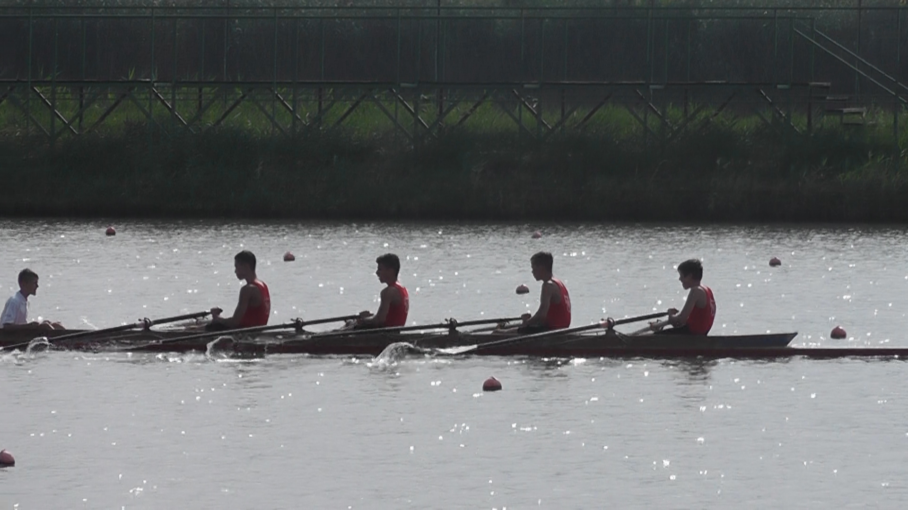
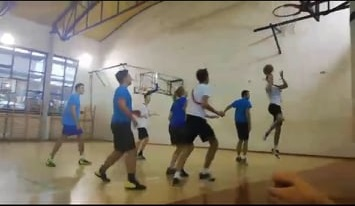
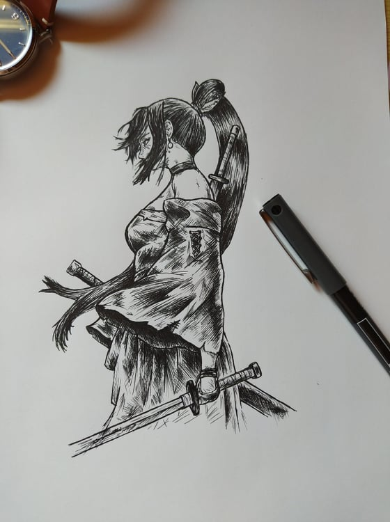

Foci
Már 5-6 évesen is a labda volt a mindenem,ezért nem is volt kérdés,hogy bele szeretek ebbe a sportba.Általános iskolában kezdtem el versenyzserűen csinálni,egyesületi és sulis szinten is tagja voltam a keretnek.
 Sok sikert is sikerült bezsebelni,persz nem csak nekem ,hanem a csapatnak köszönhetően,az egyik évben az országos diákolimpiára is kijutottunk a régi iskolámmal.Most az egyetem mellett már csak megyei szinten, egy kisebb csapatban "rúgom a bőrt",de egy jó játékra mindig kapható vagyok.
Sok sikert is sikerült bezsebelni,persz nem csak nekem ,hanem a csapatnak köszönhetően,az egyik évben az országos diákolimpiára is kijutottunk a régi iskolámmal.Most az egyetem mellett már csak megyei szinten, egy kisebb csapatban "rúgom a bőrt",de egy jó játékra mindig kapható vagyok.
Evezés A labdarúgás mellett nagy szeretettel néztem a kajak-kenu vb-ket,ezért is határoztam el,hogy jómagam is kipróbálom a sportot.  12 éves koromban kezdtem el lapátolni,az evezős profi karrierem legkiemelkedőbb eredménye az országos diákolimpia első hely.Sajnos az élet,úgy hozta, hogy 3,5 év után abba kellett hagynom az evezést, de a mai napig nyaranta visszajárok a"csónakházba", emellett nyaranta vízitúrakat szervezünk a testvéremmel.
Kosárlabda A harmadik nagy kedvenc, amit gimis éveim alatt szerettem meg, egy barátom jóvoltából.Minden este streetball-oztunk a koliban, ez amolyan rutinná vált a 4 év alatt ,  majd szépen a csipet-cspat csapattá kovácsolódott olyan szinten,hogy a megyei bajnokságon elsők lettünk.Mostanság is előfordul,hogy összejön a csapat és játszunk egyet,ami után még jobban esik a frissítő...
Rajzolás +Érdekesség.Tudom,nem sportokhoz tartozik, de mindenképp meg akartam említeni,  hogy szabadidőmben sokat rajzolok különböző karaktereket bizonyos mesékből vagy játékokból, a kezdőoldalon lévő "Homepage kép" emiatt került oda.